01.08.2020
Депутат від “Слуги народу” попався на репетиції відповідей для ЗМІ »»»
Родина Зеленського проводить вихідні на Прикарпатті »»»
Бубочка знову перетрудилася! Коли воно, реально, працює? Самі лише відпочинки!
За офіційними даними Зеленський цього року відпочивав уже 19 разів!
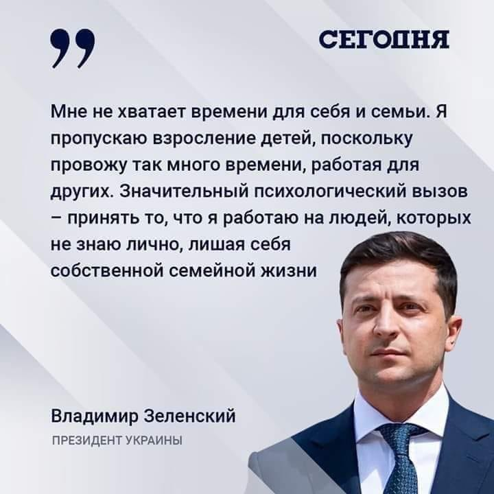
Как друзья Зеленского и Дубинского украли 360 миллионов долларов
02.08.2020
Урядова афера: на «бебі-бокси» витратять більше, а матері отримають менше »»»
Зєлєноїди навіть у новонароджених українців гроші крадуть. Здобували, здобували й здобули. Хуже нє будєт!
UPD: В ООН закликали Кабмін зберегти програму "пакунок малюка" »»»
ОБСЄ нарахувала більше 200 порушень за час "тиші" на Донбасі »»»
Росія подарувала Кадирову частину Криму »»»
03.07.2020
Новий "терорист" в Києві: чоловік погрожує підірвати бомбу в бізнес-центрі »»»
UPD: Захоплення банку в БЦ Леонардо: чому на фото з терористом різні заручниці »»»
Просте питання: "А хто зробив ПЕРШЕ ФОТО?" Знову постановочний теракт?
UPD: Все було добровільно: у поліції розповіли, чому запустили журналістів до зловмисника, який захопив банк у Києві »»»
"Г+Г" і "ZIK"? Характерні канали! Щось нагадує стиль російських медіапропагандистів, які завжди так доречно опиняються на місці події якраз перед настанням самої події.
UPD: НСЖУ засудила використання СБУ підставних журналістів »»»
UPD: "Імітація" : у МВС зробили важливу заяву щодо "київського терориста" »»»
UPD: Київський терорист є психічно хворим »»»
Чёта ржу!
UPD: Фільм від Зеленського та ще один день з 2020-го: як в соцмережах реагували на "київського терориста" »»»
Перший прем'єр-міністр Фокін погодився увійти до делегації ТКГ по Донбасу »»»
Вітаємо зі ще одним "новим обличчям"! Тепер долю країни вирішуватимуть два дев'яностолітніх маразматика з комуняцьким світоглядом!
UPD: Фокіна в ТКГ запропонував Єрмак »»»
UPD: Фокін ініціював прямі переговори з бойовиками ОРДЛО »»»
Стефанчук допускає референдум про членство України в НАТО »»»
Стефанчуку Конституція - не указ! Він ще щось інше для своїх господарів "вимутити" хоче!
UPD: ...а також прагне через референдум змінити закон про мову »»»
Кабмін зняв заборону на експорт масок і респіраторів »»»
В країні уже все добре, коронавірус відступив, маски нам уже не потрібні, можна знову розпродавати! БЛД!
Із коронавірусного фонду досі не закупили жодного апарата ШВЛ »»»
UPD: Мінфін відзвітував, куди пішли 66 млрд грн з COVID-фонду »»»
“Це гарна локшина на вухах”- волонтери, запитаннями загнали Арахамію в глухий кут »»»
Мер Дніпра: коли до нас приїжджав Порошенко, у кортежі було дві, три машини, у нинішніх керівників держави – по п'ятдесят »»»
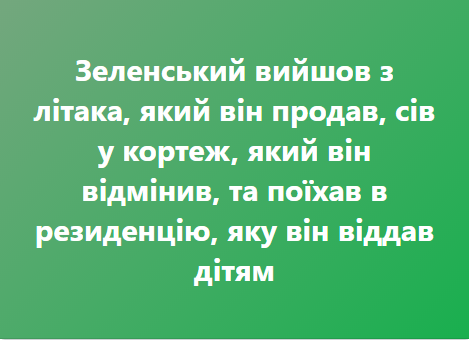
Охорона, державні дачі та кортежі припали до душі президенту Зеленському »»»
04.08.2020
У мене є правило: в Україні бізнесом не займатися, – радник Єрмака »»»
Інвестори будуть щасливі про це дізнатися!
Маленькое зеленое чмо: неизвестные переименовали Офис Президента в Google Maps »»»
МОН намагається ліквідувати агентство, яке розслідує плагіат у наукових роботах в.о. міністра освіти »»»
05.08.2020
Володимир Зеленський відверто бреше про програму "Великого будівництва", присвоюючи результати попередніх урядів і місцевої влади »»»
Володимир Зеленський призначив заступником керівника Офісу Президента Олега Татарова, який відповідатиме за правоохоронний напрям »»»
UPD: Призначення Татарова в Офіс президента наближає Україну до системної кризи »»»
"Слуга олігарха": преса США чітко зв'язала обшуки у Коломойського з Зеленським »»»
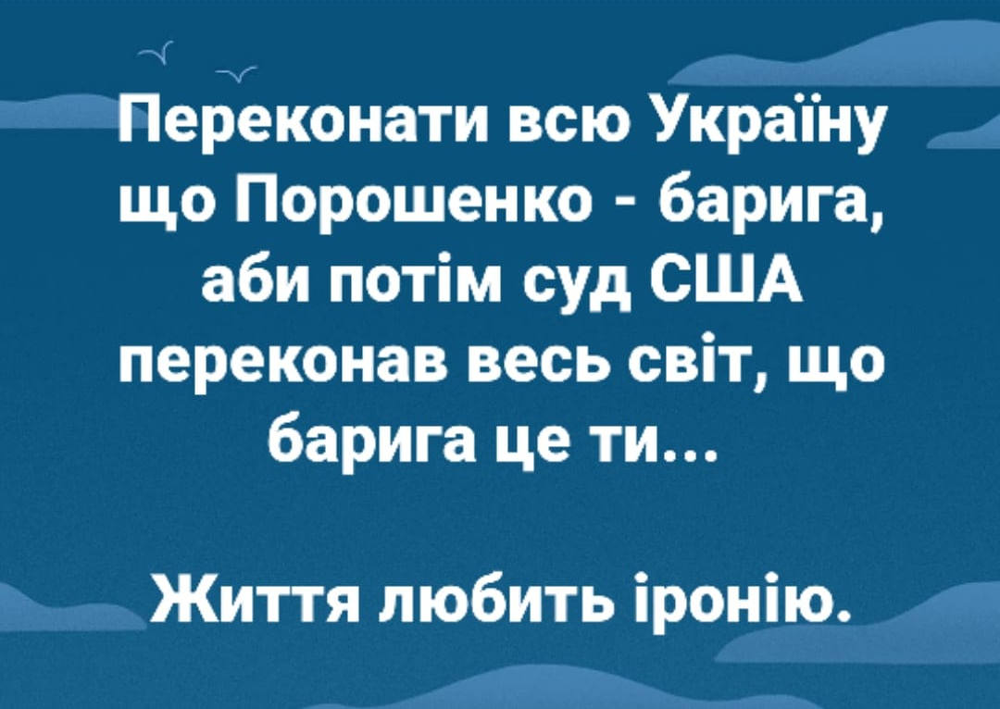
UPD: Ветеран АТО: теперь становится ясно, чего Рябошапка так решительно «соскочил» »»»
Між іншим: Міжнародна класифікація хвороб містить в собі сукупність хвороб і розладів під кодом Z73 під загальною назвою - "Проблеми, пов'язані з труднощами підтримки нормального способу життя" »»»
Кабмін урізав виплати на дітей ФОП на понад 48 млн гривень »»»
06.08.2020
Мінус 6,5%: в уряді офіційно повідомили рівень падіння ВВП в Україні за півроку »»»
UPD: Дилетанти при владі у 2019- 2020 знищили стільки ж ВВП, скільки забрала окупація Донбасу - Луценко »»»
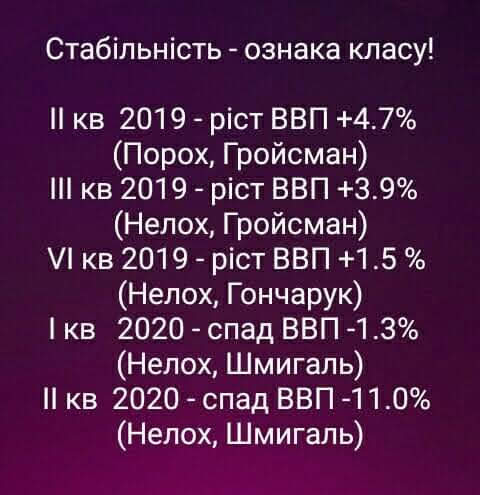
Оприлюднені факти про «Роттердам+: збитків державі не було »»»
UPD: Жоден фаховий експерт не зміг довести "злочинність формули "Роттердам+" »»»
UPD: Формула "Роттердам+" не завдала жодної шкоди державі — фінальна експертиза СБУ »»»
07.08.2020
Зеленський: Із військовими інколи треба випити, що я і роблю »»»
Зеленський "випадково" зайшов до магазину на Донеччині у супроводі телеоператорів та фоторепортерів »»»
UPD: Все заради фото. Зеленський простежив за дотриманням карантину в Бахмуті - і сам його порушив »»»
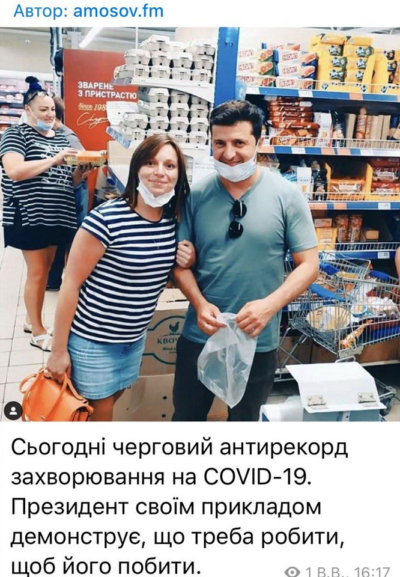
UPD: “Всюди охорона, снайпери, а все приміщення вимили антисептиком”: Блогер розповів правду про “раптовий” похід Зеленського у супермаркет »»»
А зелебобіки в екстазі:
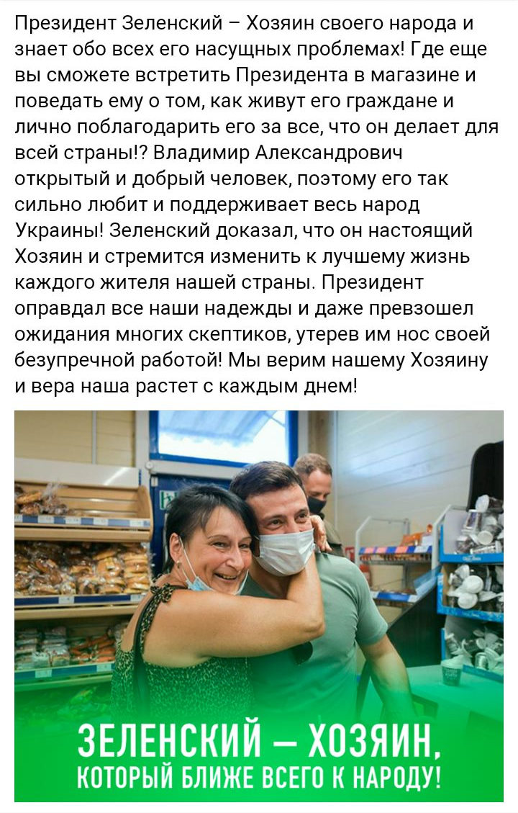
"Ми вєрім нашему хозяіну!" Ось так від народу до холопів - один крок!
Наступна зупинка – Берлін: Зеленський хоче зафіксувати результати перемир'я на Донбасі у Нормандському форматі »»»
Бойовики не дотримуються режиму тиші на Донбасі, а українським командирам забороняють захищатися »»»
UPD: "Взагалі їх можна було б не враховувати": Хомчак про поодинокі постріли під час "перемир’я" на Донбасі »»»
ПростоДноЗЕдно! Хомчак вважає що вогонь терористів у бік українських військових можна не враховувати 😡
Єрмак: Домовляємося про 3-5 ділянок для розведення військ на Донбасі »»»
Бизнес раскритиковал законопроект Зеленского о повышении минимальной зарплаты »»»
Справа Окружного адмінсуду: хто і як розвалює провадження, порушене НАБУ? »»»
Збитки "Укроборонпрому" в 1-му кварталі 2020 року становлять 681 млн грн »»»
UPD: VIP-автомобілі і бізнес-перельоти: епоха бідності в "Укроборонпромі" закінчилася »»»
За рік "зеленої влади" бюджет Дніпра втратив 3 мільярди гривень - Філатов »»»
Чи тільки Дніпра?
10.08.2020
Нардеп від "Слуги народу" завчасно привітав Лукашенка з перемогою на виборах »»»
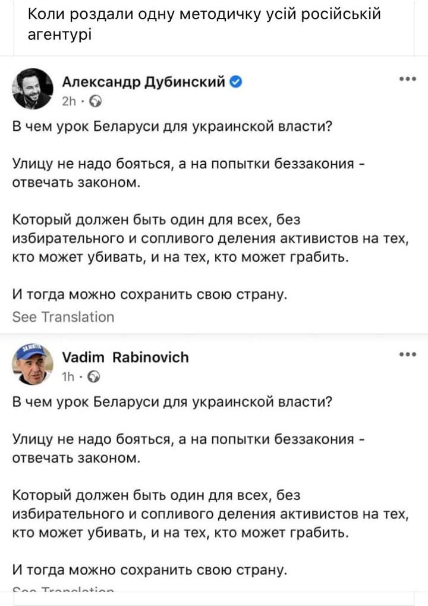
11.08.2020
Володимир Зеленський підписав закон щодо організації та проведення азартних ігор в Україні »»»
14.08.2020
Високий "штіль" від зе-охвісу:
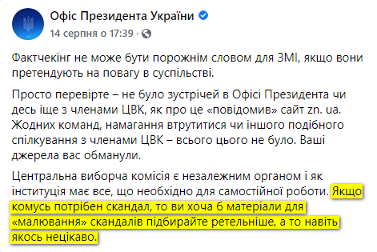
З Деркачем за фейкові плівки розрахувались "Енергоатомом" »»»
20.08.2020
Гастроль великого артиста у Запоріжжі
Козаки з Хортиці перевірили Зеленського "на хоробрість" огірком »»»
А чого б його й не бути хоробрим. З бутафорським огірком можна й в кіношних трюках участь брати. Це ж не з чотирма повістками з військкомату! І ані Марусі Звіробій, ані Софії Федини на горизонті не видно! Це не страшно!
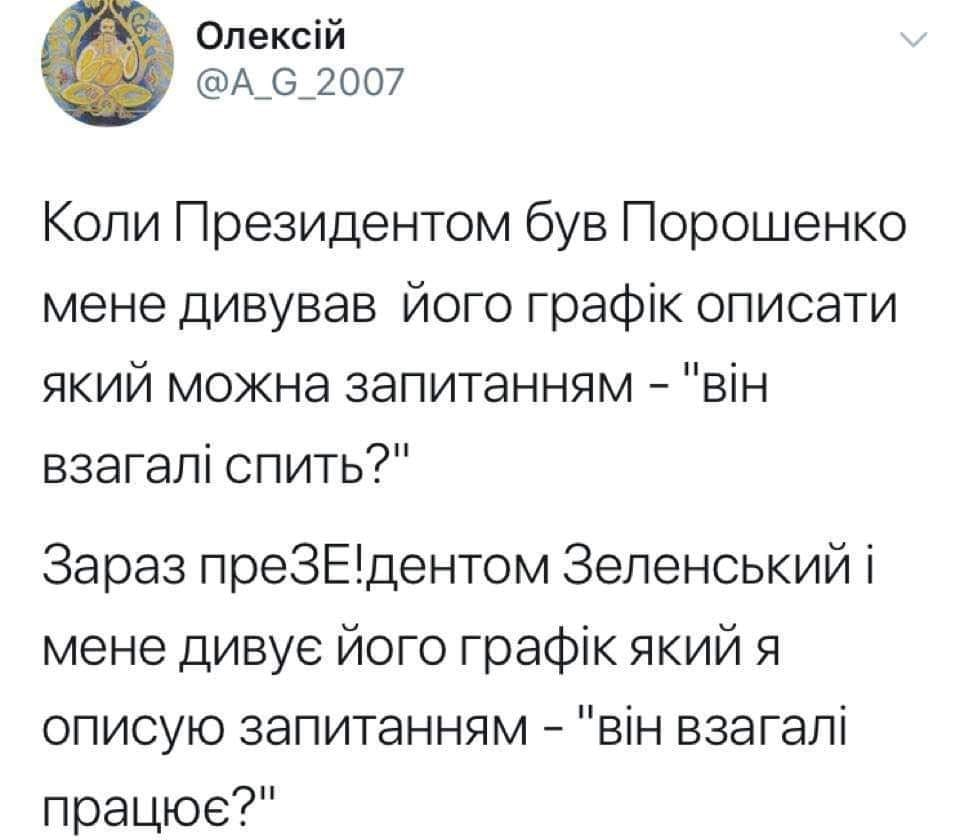
Найвеличніший у Херсоні
"Велике" будівництво — до візиту Зеленського у Херсоні вночі терміново клали новий асфальт »»»
А ось і СПРАВЖНЯ мета вояжу Зеленського - президент проводить передвибрчу агітацію перед місцевими виборами:
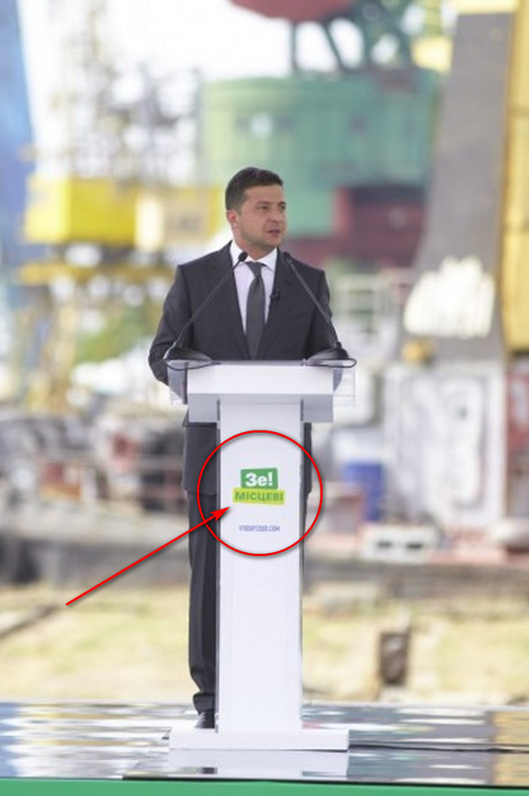
Хоча, йому не звикати! Після реклами "Епіцентру" від the можна очікувати чого завгодно!
І вишенька на тортик:
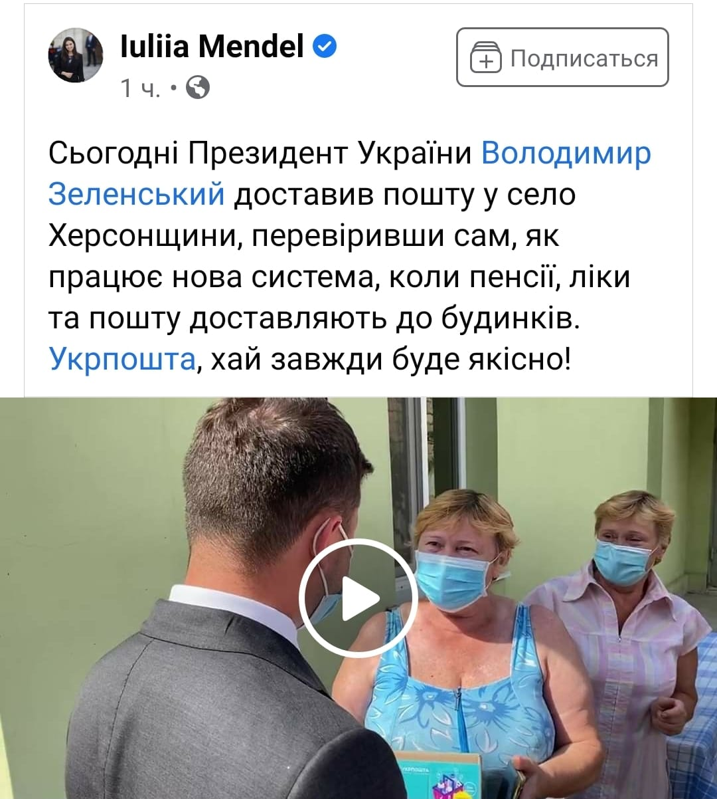
З'явилися документи, в яких Україна погоджується на умови Росії щодо Донбасу »»»
21.08.2020
За місяць “тиші” Зеленського загинули 7 бійців, але влада називає це “небойовими втратами” »»»
22.08.2020
Гастролі продовжуються. Тепер у Миколаєві
Зеленський знову вляпався у географічний конфуз »»»
UPD: Зеленський під час візиту до Миколаєва погрався з м'ячем у школі »»»
А воно усе розважається за кошт платників податків!
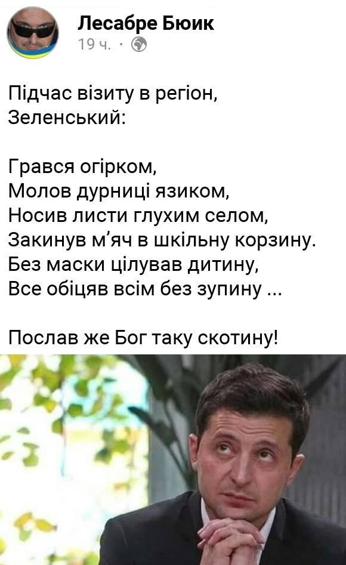
24.08.2020
Зеленський патріотам: «не плутайтесь під ногами. Не заважайте будувати Україну». Ганебний виступ на День Незалежності »»»
Щось воно нагадує! Чи не "етіх казлов каториє мєшают нам жить" у виконанні Януковича?
UPD: В День Незалежності України Зеленський і його масовка топталися по українському прапору!
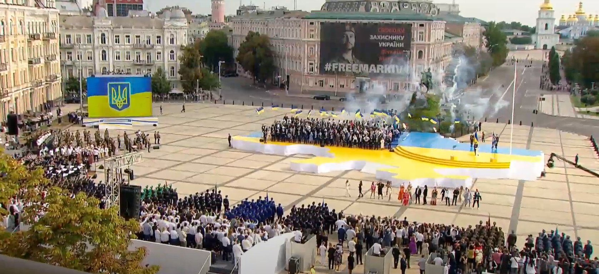
UPD: А тим часом - офіційна програма святкування від Зеленського:
На вулицях, де лилась кров, тепер на весь світ ОСЬ ЦЕ!